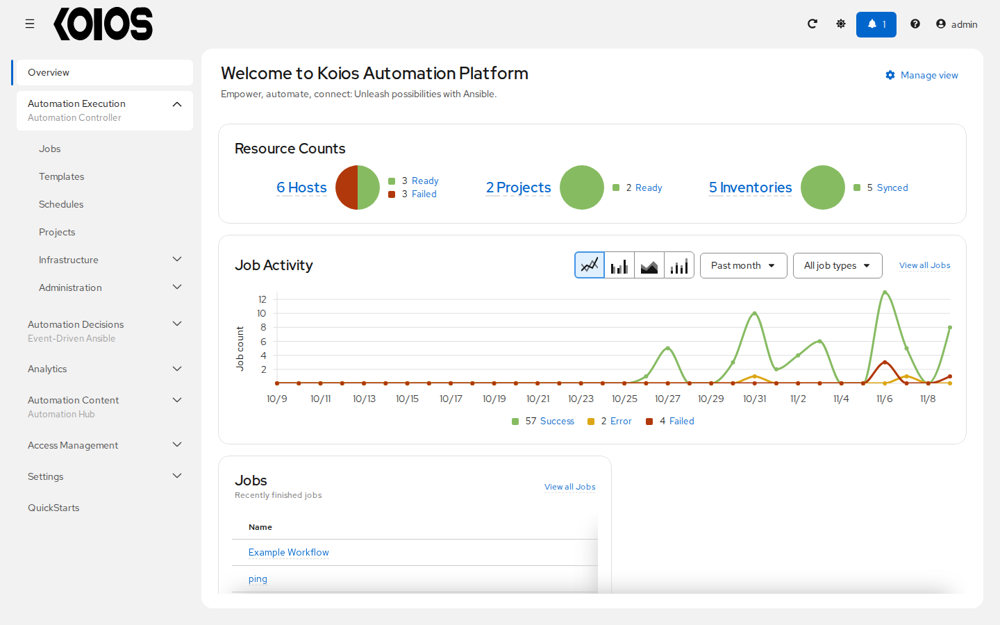
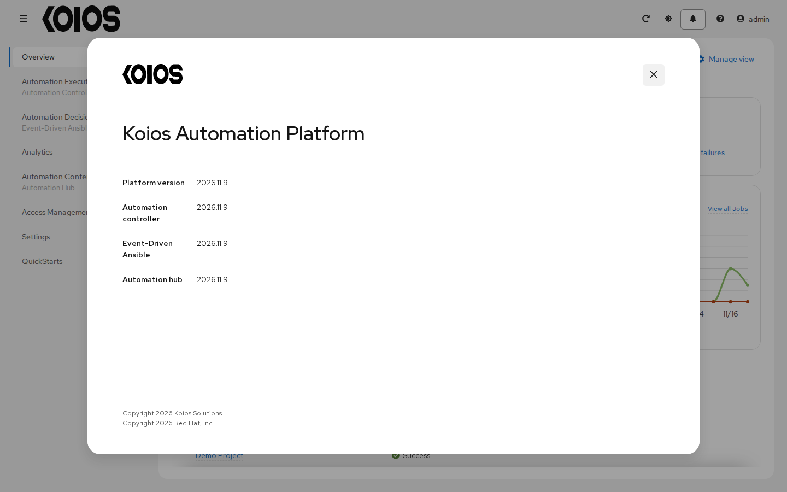
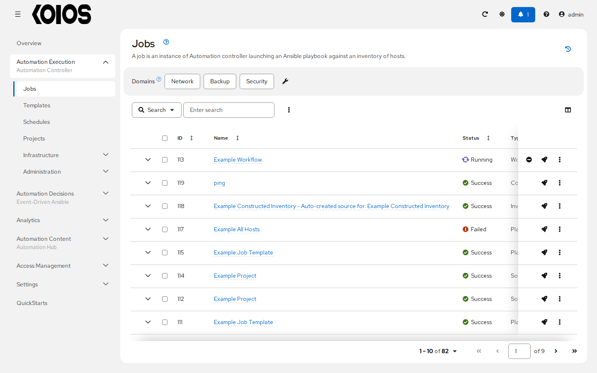
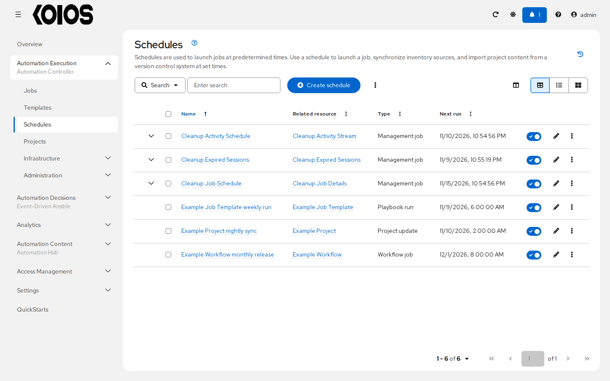
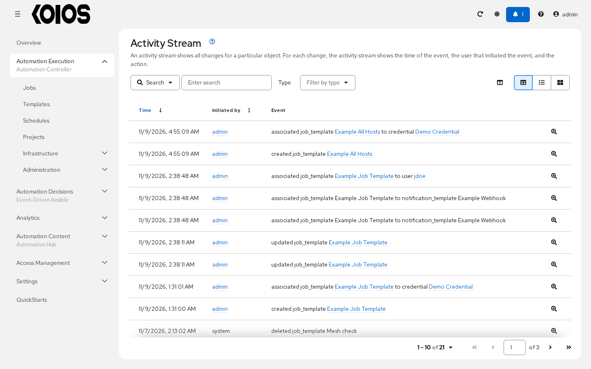
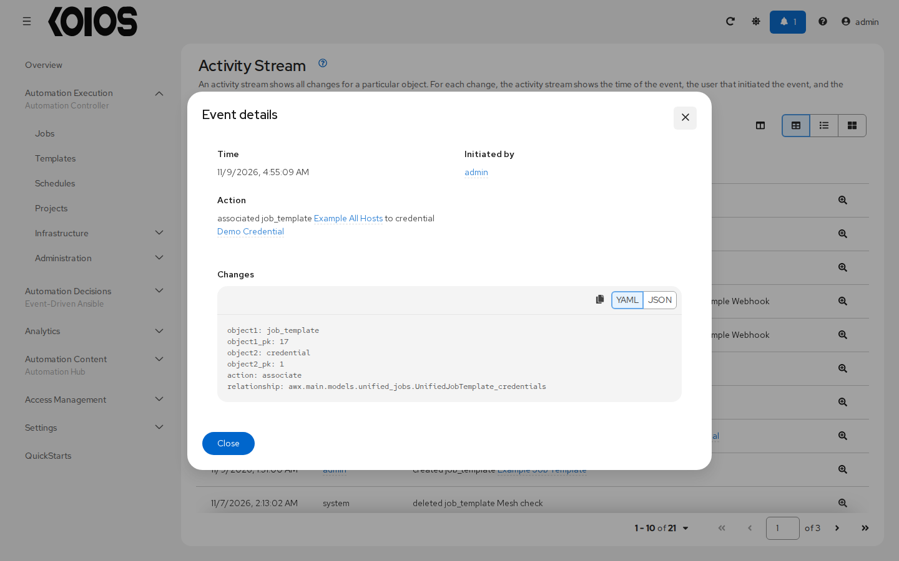
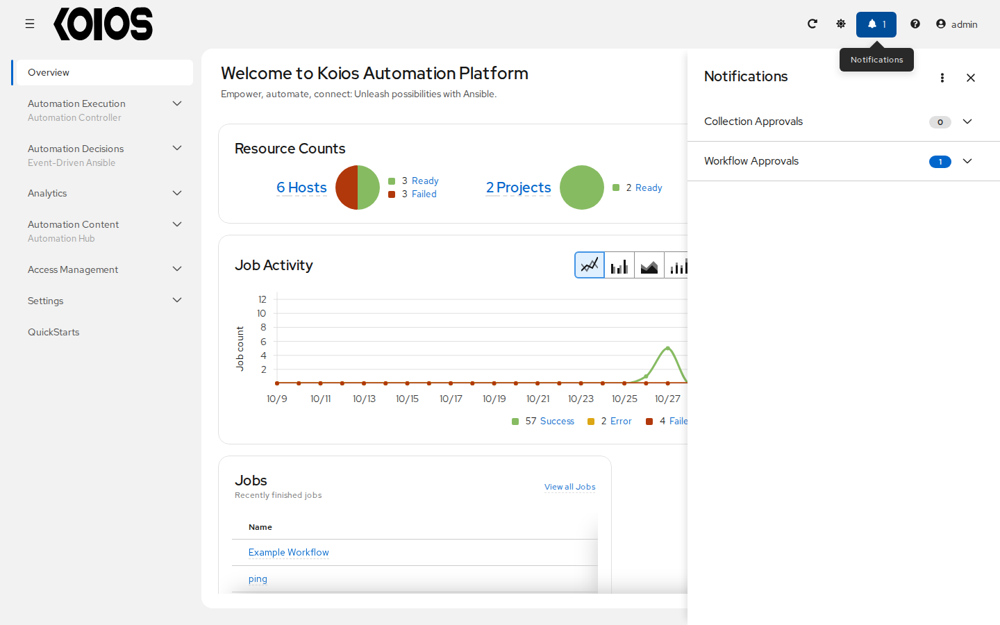

3. The User Interface
The User Interface offers a friendly graphical framework for your IT orchestration needs. The left navigation bar gives access to every part of the platform:
Overview: the dashboard of the platform.
Automation Execution (automation controller): Jobs, Templates, Schedules, Projects, Infrastructure (Topology View, Inventories, Hosts, Instance Groups, Instances, Execution Environments, Credentials and Credential Types) and Administration (Activity Stream, Deprecations, Workflow Approvals, Notifiers and Management Jobs).
Automation Decisions (Event-Driven Ansible) and Automation Content (automation hub).
Analytics, Access Management (organizations, teams, users, roles and authentication), Settings and QuickStarts.
The button at the top left collapses or expands the navigation bar. Across the top-right side of the interface you can refresh the page, switch the color theme, open the notifications, open the help menu (documentation, quick starts and the About page), and open your user menu (user details and logout).

The About entry of the help menu shows the version of the platform and of each installed component (automation controller, Event-Driven Ansible and automation hub), which is the platform release since 2026.11.9:

3.1. Themes
Choose the color theme in Settings > User Preferences, field Color theme: System (the default) follows the theme of your operating system or browser; Light and Dark fix it.
The choice is stored in your browser, not in your account, so set it again on another browser or machine. The login page has a dark background in every theme.
3.2. Views
The User Interface provides several options for viewing information.
3.2.1. Dashboard view
The Overview page begins with the Resource Counts of your hosts, projects and inventories, with their status. Each of these is linked to the corresponding objects for easy access. The Job Activity graph displays the number of successful, failed and errored jobs over a specified time period; you can choose the time period, the job types and the kind of chart. The Jobs card lists jobs ordered by finish time, newest first; running jobs can appear in it too. Click Manage view to choose and arrange the cards.

Note
Clicking Overview in the navigation menu, or the Koios Automation Platform logo, returns you to the Overview.
3.2.2. Jobs view
Access the Jobs view by opening Automation Execution > Jobs. This view shows all the jobs that have run, including playbook runs, workflow jobs, project and inventory syncs, ad hoc commands and management jobs. See Jobs.

3.2.3. Schedules view
Access the Schedules view by opening Automation Execution > Schedules. This view shows all the schedules that are configured, of every kind of resource, with their next run; the switch of each row enables or disables it, and Create schedule adds one. See Schedules.

3.2.4. Activity Stream
The lists of automation controller resources have an Activity Stream button (clock icon) at the top right. Clicking it opens the Activity Stream filtered for that type of resource. The complete Activity Stream is in Automation Execution > Administration > Activity Stream.

An Activity Stream shows the changes of the resources. For each change, it shows the time of the event, the user that initiated the event (or system), and the action. Clicking View event details (magnifier icon) shows the details of the change, including the changed fields.

The Activity Stream can be searched, and filtered by Type of resource, such as jobs, schedules, workflow approvals, templates or credentials.
3.2.5. Workflow Approvals
Open Automation Execution > Administration > Workflow Approvals to see your workflow approval queue. The list contains actions that require you to approve or deny before a workflow can proceed. The Notifications panel, opened with the bell at the top of the page, lists the workflow approvals (and the collection approvals of automation hub) as notifications; the counter of the bell shows the unread ones, and marking them as read does not approve or deny them, so use the approval lists to see what is pending. See Approval nodes for further detail.

3.3. Resources and Access
The Automation Execution and Access Management menus provide you access to the various components of automation controller and allow you to configure who has permissions for those resources:
Templates (Job Templates and Workflow Job Templates)
3.4. Administration
The Automation Execution > Administration and Automation Execution > Infrastructure menus provide access to the various administrative options. From here, you can create, view, and edit: